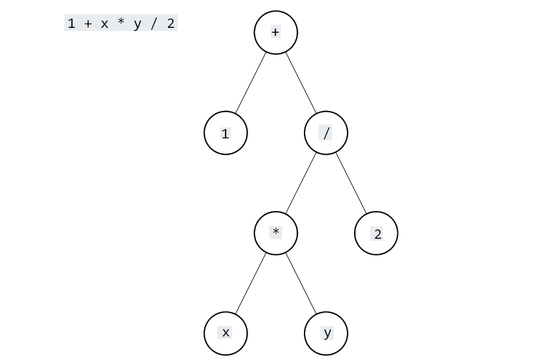

การเขียนโปรแกรมภาษา C (ตอนที่ 2)#
หัวข้อสำหรับการเรียนรู้#
- นิพจน์ (Expression) และ ตัวดำเนินการ (Operators)
- ชนิดข้อมูลพื้นฐาน (Primitive Data Types)
- ชนิดข้อมูลเชิงประกอบ (Compound Data Types)
บทความที่เกี่ยวข้อง#
- "การเขียนโปรแกรมภาษา C (ตอนที่ 1) " [→]
- "การใช้ GNU C/C++ Toolchain สำหรับการคอมไพล์โค้ดในเบื้องต้น" [→]
- "การใช้ซอฟต์แวร์ Geany เพื่อการเขียนโปรแกรมภาษา C/C++ สำหรับ Linux" [→]
▷ นิพจน์ (Expressions) และ ตัวดำเนินการ (Operators)#
นิพจน์ หมายถึง สิ่งที่สามารถหาค่าได้จากการทำงานของโค้ด นิพจน์สร้างได้จากการนำเอาตัวแปร ข้อมูลคงที่ หรือ การเรียกใช้ฟังก์ชันแล้วได้ค่าจากการทำงานของฟังก์ชัน หรือจะนำค่าเหล่านั้นมาผ่านตัวดำเนินการในรูปแบบต่าง ๆ
ตัวดำเนินการอาจจำแนกได้ตามจำนวนของข้อมูลที่ต้องใช้ หรือ เรียกว่า "ตัวถูกดำเนินการ" หรือ "โอเปอแรนด์" (Operands)
- ตัวดำเนินการที่มีหนึ่งตัวถูกดำเนินการ (Unary Operators)
- ตัวดำเนินการที่มีสองตัวถูกดำเนินการ (Binary Operators)
- ตัวดำเนินการที่มีสามตัวถูกดำเนินการ (Ternary Operators)
ตัวดำเนินการในภาษาซี ยังสามารถจำแนกได้เป็นกลุ่มต่าง ๆ ดังนี้
- ตัวดำเนินการเชิงตัวเลข (Arithmetic Operators) ใช้สำหรับการสร้างนิพจน์เพื่อคำนวณเชิงตัวเลข เช่น การบวก ลบ คูณ หาร เป็นต้น
- ตัวดำเนินการสัมพันธ์ (Relational Operators) ใช้สำหรับการเปรียบเทียบค่ามากกว่า น้อยกว่า หรือ เท่ากับ เป็นต้น และให้ค่าเป็นจริง (1) หรือ เท็จ (0)
- ตัวดำเนินการตรรกะ (Logical Operators) ใช้สำหรับการสร้างนิพจน์ที่เป็นบูลีน (Boolean Expression) ให้ค่าเป็นจริง (1) หรือ เท็จ (0)
- ตัวดำเนินการระดับบิต (Bitwise Operators) ใช้สำหรับการสร้างนิพจน์ที่มีการดำเนินการกับข้อมูลในแต่ละบิต และใช้กับข้อมูลที่เป็นเลขจำนวนเต็ม
- ตัวดำเนินการเพื่อกำหนดค่าให้ตัวแปร (Assignment Operator) ใช้ในการกำหนดค่าให้ตัวแปรโดยใช้ค่าจากนิพจน์
- ตัวดำเนินการแบบอื่น ๆ เช่น
sizeof()เพื่อระบุขนาด (จำนวนไบต์) ของชนิดข้อมูล และตัวดำเนินการที่เกี่ยวข้องกับการใช้ตัวแปรประเภทที่เรียกว่า "พอยน์เตอร์" (Pointers)
▷ ตัวดำเนินการเชิงตัวเลข#
ตารางแสดงตัวดำเนินการเชิงตัวเลขในภาษาซี มีดังนี้
| Arithmetic Operator | Description |
|---|---|
+ |
Addition (การบวก) |
− |
Subtraction (การลบ) |
* |
Multiplication (การคูณ) |
/ |
Division (การหาร) |
% |
Modulus (การหารเลขจำนวนเต็มเหลือเศษ) |
++ |
(Pre- / Post-) Increment (การเพิ่มค่าทีละหนึ่ง) |
-- |
(Pre- / Post-) Decrement (การลดค่าทีละหนึ่ง) |
<< |
Shift Left (การเลื่อนบิตไปทางซ้าย) |
>> |
Shift Right (การเลื่อนบิตไปทางขวา) |
ตัวอย่างการเขียนนิพจน์ โดยให้ x และ y เป็นตัวแปรที่มีชนิดข้อมูลแบบ int (เลขจำนวนเต็ม)
(x + y)/2หมายถึง การนำค่าของตัวแปรxมาบวกกับค่าของตัวแปรyแล้วจึงหารด้วย2ได้เป็นค่าของนิพจน์x / 10หมายถึง การนำค่าของตัวแปรxมาหารด้วย10เพื่อใช้เป็นค่าของนิพจน์ เนื่องจากxมีชนิดข้อมูลเป็นเลขจำนวนเต็ม เมื่อหารแล้วเหลือเศษ ให้ตัดเศษทิ้งไป เช่น ถ้าxเท่ากับ53จะได้ค่าของนิพจน์เป็น5x % 10หมายถึง การนำค่าของตัวแปรxมาหารด้วย10แล้วนำเศษที่ได้ไปใช้เป็นค่าของนิพจน์ เช่น ถ้าxเท่ากับ53จะได้ค่าของนิพจน์เป็น3(x << 8) + yหมายถึง การนำค่าของตัวแปรxซึ่งเป็นเลขจำนวนเต็ม (ให้มองเป็นเลขฐานสอง) มาเลื่อนบิตไปทางซ้าย8ตำแหน่ง แล้วจึงนำผลลัพธ์ที่ได้ไปบวกกับค่าของตัวแปรyได้เป็นค่าของนิพจน์++x * 2หมายถึง การเพิ่มค่าของตัวแปรxอีกหนึ่ง เนื่องจากมีตัวดำเนินการ++อยู่ข้างหน้าตัวแปรx(Pre-increment) แล้วนำค่าใหม่ของตัวแปรนั้น มาคูณกับ2x++ * 2หมายถึง การนำค่าของตัวแปรxมาคูณกับ2แล้วได้เป็นค่าของนิพจน์ และหลังจากนั้นให้เพิ่มค่าของตัวแปรxขึ้นอีก1เนื่องจากมีตัวดำเนินการ++ตามหลังตัวแปรx(Post-increment)--xหมายถึง การนำตัวแปรxมาลดค่าลงอีกหนึ่งก่อน แล้วนำค่าที่ได้ไปใช้เป็นค่าของนิพจน์-(-x)จะได้ค่าของตัวแปรx(ใช้ตัวดำเนินการ-อยู่ข้างหน้าตัวแปรxสองครั้ง) และค่าของตัวแปรxไม่มีการเปลี่ยนแปลง
▷ ตัวดำเนินการสัมพันธ์#
ตารางแสดงตัวดำเนินการสัมพันธ์ในภาษาซีสำหรับการเปรียบเทียบค่าของนิพจน์ มีดังนี้
| Relational Operator | Description |
|---|---|
== |
Equal (เท่ากัน) |
!= |
Not Equal (ไม่เท่ากัน) |
> |
Greater Than (มากกว่า) |
>= |
Greater Than or Equal (มากกว่าหรือเท่ากัน) |
< |
Less Than (น้อยกว่า) |
<= |
Less Than or Equal (น้อยกว่าหรือเท่ากัน) |
ตัวอย่างการเขียนนิพจน์ โดยให้ x และ y เป็นตัวแปรที่มีชนิดข้อมูลพื้นฐาน เช่น char int หรือ float ที่ให้ค่าเป็นเลขจำนวนเต็ม หรือ เลขทศนิยม
x > yหมายถึง นิพจน์นี้ให้ค่าเป็น 1 ถ้าxมีค่ามากกว่าyแต่ถ้าไม่ใช่ จะได้ค่าเป็น0x <= yหมายถึง นิพจน์นี้ให้ค่าเป็น 1 ถ้าxมีค่าน้อยกว่าหรือเท่ากับyแต่ถ้าไม่ใช่ จะได้ค่าเป็น01 - (x!=y)หมายถึง ถ้าxไม่เท่ากับyจะได้ค่าเป็น0แต่ถ้าตัวแปรทั้งสองมีค่าเท่ากัน จะได้ค่าของนิพจน์เป็น1หรือจะเขียนนิพจน์ใหม่ที่ให้ผลลัพธ์เหมือนกันคือ(x==y)
▷ ตัวดำเนินการตรรกะ#
ตารางแสดงตัวดำเนินการตรรกะในภาษาซีสำหรับสร้างเงื่อนไขหรือนิพจน์ที่ให้ค่าเป็นจริงหรือเท็จ (ตัวแปรที่เป็นบูลีน) มีดังนี้
| Logical Operator | Description |
|---|---|
! |
Logical NOT (กลับค่าลอจิก หรือ นิเสธ) |
&& |
Logical AND (ทำเหมือนลอจิกเกต "และ") |
|| |
Logical OR (ทำเหมือนลอจิกเกต "หรือ") |
ตัวอย่างการเขียนนิพจน์
!xจะได้ค่าเป็น1ถ้าค่าของตัวแปรxเท่ากับ0(ในกรณีอื่น จะได้ค่าเป็น0) ในภาษาซี ค่าที่ไม่เท่ากับ0เมื่อถูกนำไปใช้กับตัวดำเนินการตรรกะ จะให้ค่าเหมือน1(ลอจิก)!(!x)หรือ!!xหรือ(x!=0)จะให้ค่านิพจน์เหมือนกันx && (!x)จะได้ค่าเป็น0และ!(x && (!x))จะได้ค่าเป็น1โดยไม่ขึ้นอยู่กับค่าของตัวแปรxในขณะนั้น(!x) || xและ!(x && (!x))จะให้ค่าของนิพจน์เหมือนกัน ซึ่งเป็นไปตามกฎเดอมอร์แกน (De Morgan's laws) ในวิชาตรรกศาสตร์1 - (x!=y)และ(x==y)ให้ค่าของนิพจน์เหมือนกัน และสามารถเขียนนิพจน์ใหม่ที่ให้ผลเหมือนกันได้เป็น1 - !(x==y)และ!(x!=y)โดยมีการใช้ตัวดำเนินการ!เพื่อกลับค่าลอจิก (การกลับค่าลอจิก หมายถึง ถ้าโอเปอแรนด์มีค่าเป็น0ก็จะได้ค่าเป็น1หรือตรงกันข้าม)
▷ ตัวดำเนินการระดับบิต#
ตารางแสดงตัวดำเนินการระดับบิตในภาษาซี ซึ่งจะใช้กับข้อมูลหรือตัวแปรที่ให้ค่าเป็นเลขจำนวนเต็ม
| Bitwise Operator | Description |
|---|---|
~ |
Bitwise NOT (กลับค่าบิตทุกตำแหน่ง) |
& |
Bitwise AND |
| |
Bitwise OR |
^ |
Bitwise XOR (Exclusive OR) |
▷ ตัวดำเนินการกำหนดค่าให้ตัวแปร#
ตารางแสดงตัวดำเนินการกำหนดค่าให้ตัวแปรในภาษาซี
| Assignment Operator | Description |
|---|---|
= |
Assignment |
+= |
Addition and Assignment |
-= |
Subtraction and Assignment |
*= |
Multiplication and Assignment |
/= |
Division and Assignment |
%= |
Modulus and Assignment |
<<= |
Shift Left Assignment |
>>= |
Shift Right Assignment |
&= |
Bitwise AND and Assignment |
|= |
Bitwise OR and Assignment |
^= |
Bitwise XOR and Assignment |
ตัวอย่างการเขียนนิพจน์หรือประโยคคำสั่ง
x = x+1;หมายถึง ให้คำนวณค่าของนิพจน์ทางขวาของเครื่องหมาย=ซึ่งก็คือ การนำค่าของตัวแปรxมาบวกกับ1แล้วใช้ผลลัพธ์ที่ได้เป็นค่าใหม่ของตัวแปรxหรือจะเขียนใหม่เป็นประโยคคำสั่งx++;หรือx +=1;ซึ่งให้ผลเหมือนกันx = x << 1;หมายถึง ให้นำมาของตัวแปรxมาเลื่อนบิตไปทางซ้ายหนึ่งตำแหน่ง แล้วนำไปใช้เป็นค่าใหม่ของตัวแปรxหรือจะเขียนประโยคคำสั่งx <<= 1;ก็ให้ผลเหมือนกันx = y = 0;เป็นการกำหนดค่าให้ตัวแปรyเป็น0ก่อน แล้วใช้ค่าดังกล่าวไปกำหนดค่าให้ตัวแปรxในลำดับถัดไป (ดำเนินการจากขวาไปซ้าย)x = y, y = 0;เป็นการกำหนดค่าให้ตัวแปรxเท่ากับค่าของตัวแปรyแล้วจึงทำให้ค่าของตัวแปรyเป็น0ตามลำดับ (ดำเนินการจากซ้ายไปขวา)x += y <<= 1;จะให้ผลเหมือนกับการเขียนประโยคคำสั่งx += (y <<= 1);โดยดำเนินการจากขวาไปซ้าย หรืออาจจะเขียนใหม่ โดยแบ่งเป็นสองประโยคคำสั่งดังนี้y <<= 1; x += y;
▷ ลำดับความสำคัญตัวดำเนินการ (Precedence of Operators)#
ตัวดำเนินการในภาซี มีลำดับก่อนหรือหลังในการดำเนินการ (เรียกว่า Operator Precedence) ที่แตกต่างกันได้ หรือมีลำดับความสำคัญไม่เท่ากัน ถ้ามีลำดับการดำเนินการเท่ากัน ให้พิจารณาทิศทางการดำเนินการ หรือทิศทางการจัดกลุ่มของ ตัวถูกดำเนินการ (Associativity) ของตัวดำเนินการ ซึ่งส่วนใหญ่จะเป็นแบบจากซ้ายไปขวา (Left-to-Right) แต่บางกรณีก็เป็นแบบจากขวาไปซ้าย (Right-to-Left)
แต่ถ้าจะเจาะจงลำดับการดำเนินการ ให้ใส่วงเล็บ ( .. ) เนื่องจากมีลำดับการดำเนินการสูงสุด ดังนั้นสิ่งที่อยู่ในวงเล็บจะต้องดำเนินการก่อน และให้ผลลัพธ์เพื่อนำไปใช้เป็นค่าของนิพจน์ในระดับถัดไป
ตัวดำเนินการและลำดับการดำเนินการก่อนหลัง เรียกจากมากไปน้อย
| ประเภทของตัวดำเนินการ | ตัวดำเนินการ | ทิศทางการจัดกลุ่ม |
|---|---|---|
| Postfix | () [] -> . ++ -- |
Left to right |
| Unary | + - ! ~ ++ -- (type) * & sizeof() |
Right to left |
| Multiplicative | * / % |
Left to right |
| Additive | + - |
Left to right |
| Shift | << >> |
Left to right |
| Relational | < <= > >= |
Left to right |
| Equality | == != |
Left to right |
| Bitwise AND | & |
Left to right |
| Bitwise XOR | ^ |
Left to right |
| Bitwise OR | | |
Left to right |
| Logical AND | && |
Left to right |
| Logical OR | || |
Left to right |
| Conditional | ? : |
Right to left |
| Assignment | = += -= *= /= %= >>= <<= &= ^= |= |
Right to left |
| Comma | , |
Left to right |
ตัวอย่างการเขียนนิพจน์โดยใช้โอเปอเรเตอร์กับตัวแปร เช่น x y ข้อมูลค่าคงที่
- นิพจน์
x - y + 1: เนื่องจาก+และ-มีลำดับการทำงานเท่ากัน ให้ดำเนินการจากซ้ายไปขวา ดังนั้นจึงให้ผลลัพธ์เหมือนนิพจน์ที่มีการใช้วงเล็บ(x-y)+1 - นิพจน์
1 + x * y / 2: เนื่องจาก*และ/มีลำดับการทำงานเท่ากัน แต่สูงกว่า+จึงให้ผลลัพธ์เหมือนนิพจน์ที่มีการใช้วงเล็บ1 + ((x*y)/2) - นิพจน์
x+y > 0 || x-y < 2: ให้ผลลัพธ์เหมือนนิพจน์((x+y) > 0) || ((x-y) < 2) - นิพจน์
y>0 || y==0 && x!=0: ให้ผลลัพธ์เหมือนนิพจน์(y>0) || ((y==0) && (x!=0)) - นิพจน์
x+1 << 1 > 15: ให้ผลลัพธ์เหมือนนิพจน์((x+1) << 1) > 15)

รูป: แผนผังของนิพจน์ (Expression Tree) สำหรับ 1 + x * y / 2 ที่แสดงลำดับการดำเนินการ
▷ ชนิดข้อมูลพื้นฐานในภาษาซี#
ตัวแปรจะต้องมีการระบุชื่อและชนิดของข้อมูลที่จะใช้กับตัวแปร ชนิดของข้อมูลพื้นฐานในภาษาซี ได้แก่
- ข้อมูลที่เป็นเลขจำนวนเต็ม
intอาจมีคำเขียนกำกับไว้ข้างหน้า เช่นsignedและunsignedเพื่อระบุว่า มีค่าเป็นลบได้หรือไม่ หรือเพื่อกำหนดขนาดของข้อมูล เช่นshort,longและlong longเป็นต้น - ข้อมูลที่มีขนาดเล็กสุด คือ
charหรือ Character มีขนาดหนึ่งไบต์ ใช้แทนตัวอักขระได้หนึ่งตัวในชุดอักขระแอสกี หรือจะใช้กับค่าเลขจำนวนเต็มขนาด 8 บิตก็ได้ - ข้อมูลที่เป็นเลขทศนิยม ได้แก่
float,doubleและlong doubleซึ่งจะมีขนาดข้อมูลไม่เท่ากัน และมีช่วงในการเก็บค่าได้ไม่เท่ากัน
ในไฟล์ <limits.h> ได้มีการประกาศสัญลักษณ์หรือค่าคงที่สำหรับชนิดข้อมูลที่เป็นเลขจำนวนเต็ม เช่น
| Constant | Meaning | Value |
|---|---|---|
CHAR_BIT |
Number of bits of a byte | 8 |
SCHAR_MIN |
Min. value for signed char |
-128 |
SCHAR_MAX |
Max. value for signed char |
+127 |
UCHAR_MAX |
Max. value for unsigned char |
+255 (0xff) |
CHAR_MIN |
Min. value for char |
-128 |
CHAR_MAX |
Max. value for char |
+127 |
SHRT_MIN |
Min. value for short |
-32768 |
SHRT_MAX |
Max. value for short |
+32767 |
USHRT_MAX |
Max. value for unsigned short |
+65535 (0xffff) |
INT_MIN |
Min. value for int |
-2147483648 |
INT_MAX |
Max. value for int |
+2147483647 |
UINT_MAX |
Max. value for unsigned int |
+4294967295 (0xffffffff) |
LONG_MIN |
Min. value for long |
-2147483648 |
LONG_MAX |
Max. value for long |
+2147483647 |
ULONG_MAX |
Max. value for unsigned long |
+4294967295 (0xffffffff) |
LLONG_MIN |
Min. value for long long |
-9,223,372,036,854,775,808 |
LLONG_MAX |
Max. value for long long |
+9,223,372,036,854,775,807 |
ULLONG_MAX |
Max. value for unsigned long long |
+18,446,744,073,709,551,615 (0xffffffffffffffff) |
#include <stdio.h>
#include <limits.h>
int main() {
printf( "The number of bits in a byte %d\n", CHAR_BIT );
printf( "The min. value of CHAR = %+d\n", CHAR_MIN );
printf( "The max. value of CHAR = %+d\n", CHAR_MAX );
printf("The min. value of SIGNED CHAR = %+d\n", SCHAR_MIN );
printf("The max. value of SIGNED CHAR = %+d\n", SCHAR_MAX );
printf("The max. value of UNSIGNED CHAR = %+d\n", UCHAR_MAX);
printf("The min. value of SHORT INT = %+d\n", SHRT_MIN );
printf("The max. value of SHORT INT = %+d\n", SHRT_MAX );
printf("The min. value of INT = %+d\n", INT_MIN );
printf("The max. value of INT = %+d\n", INT_MAX );
printf("The max. value of UNSIGNED INT = %u\n", UINT_MAX );
printf("The min. value of LONG = %+ld\n", LONG_MIN );
printf("The max. value of LONG = %+ld\n", LONG_MAX );
printf("The max. value of UNSIGNED LONG = %lu\n", ULONG_MAX );
printf("The min. value of LONG LONG = %+lld\n", LLONG_MIN );
printf("The max. value of LONG LONG = %+lld\n", LLONG_MAX );
printf("The max. value of UNSIGNED LONG = %lu\n", ULONG_MAX );
printf("The max. value of UNSIGNED LONG LONG = %llu\n", ULLONG_MAX );
return 0;
}
#include <stdio.h>
#include <float.h>
int main() {
printf( "Max. value of type:\n" );
printf( " float : %e\n", FLT_MAX );
printf( " double : %e\n", DBL_MAX );
printf( "long double : %Le\n\n", LDBL_MAX );
printf( "The closest absolute value to 0 of type:\n" );
printf( " float : %e\n", FLT_MIN );
printf( " double : %e\n", DBL_MIN );
printf( "long double : %Le\n", LDBL_MIN );
return 0;
}
การแสดงขนาด (จำนวนไบต์ที่ใช้) ของชนิดข้อมูลที่ใช้ในภาษา C โดยใช้คำสั่ง sizeof() ซึ่งจะให้ค่าเป็นเลขจำนวนเต็มเป็นแบบ size_t ซึ่งหมายถึง unsigned long ที่มีขนาด 32 บิต แล้วนำไปแสดงค่าด้วยคำสั่ง printf() และจะต้องใช้ %lu เป็น Format Specifier เพื่อแสดงข้อความสำหรับข้อมูลที่เป็น unsigned long
ตัวอย่างโค้ดสำหรับแสดงขนาดของชนิดข้อมูลในภาษาซี
#include <stdio.h>
int main(void) {
// show the sizes (in bytes) of primitive data types in C
printf( "sizeof(char) : %lu\n", sizeof(char) ); // 1
printf( "sizeof(short) : %lu\n", sizeof(short) ); // 2
printf( "sizeof(int) : %lu\n", sizeof(int) ); // 4
printf( "sizeof(long) : %lu\n", sizeof(long) ); // 8
printf( "sizeof(long long) : %lu\n", sizeof(long long) ); // 8
printf( "sizeof(float) : %lu\n", sizeof(float) ); // 4
printf( "sizeof(double) : %lu\n", sizeof(double) ); // 8
printf( "sizeof(long double) : %lu\n", sizeof(long double)); // 16
return 0;
}
ขนาดของข้อมูลชนิด ถ้าคอมไพล์โค้ดตัวอย่างโดยใช้คำสั่ง gcc สำหรับ 64-bit Linux จะได้ผลลัพธ์ เป็นไปตามตารางต่อไปนี้
| Type | Size (bytes) | Format Specifier |
|---|---|---|
char |
1 | %c |
unsigned char |
1 | %u |
short |
2 | %hd |
unsigned short |
2 | %u |
int, signed int |
4 | %d, %i |
unsigned int |
4 | %u |
long, signed long |
8 | %ld, %li |
unsigned long |
8 | %lu |
long long, signed long long |
8 | %lld , %lli |
unsigned long long |
8 | %llu |
float |
4 | %f |
double |
8 | %lf |
long double |
16 | %Lf |
ตัวอย่างโค้ดสำหรับแสดงขนาดของข้อมูลค่าคงที่ในภาษาซี
#include <stdio.h>
int main(void) {
// show the sizes (in bytes) of literals in C
printf( "sizeof((char)'.')\t: %lu\n", sizeof((char)'.') ); // 1
printf( "sizeof('.') \t\t: %lu\n", sizeof('.') ); // 4
printf( "sizeof(\"\") \t\t: %lu\n", sizeof("") ); // 1
printf( "sizeof(1UL) \t\t: %lu\n", sizeof(1UL) ); // 8
printf( "sizeof(1LL) \t\t: %lu\n", sizeof(1LL) ); // 8
printf( "sizeof(1ULL) \t\t: %lu\n", sizeof(1ULL) ); // 8
printf( "sizeof(1.e0f) \t\t: %lu\n", sizeof(1.e0f) ); // 4
printf( "sizeof(1.e0) \t\t: %lu\n", sizeof(1.e0 ) ); // 8
printf( "sizeof(1.e0l) \t\t: %lu\n", sizeof(1.e0l) ); // 16
return 0;
}
▷ ข้อมูลเชิงประกอบ (Compound Data Types)#
นอกจากนั้นยังมีชนิดข้อมูลในแบบที่เรียกว่า "ข้อมูลเชิงประกอบ" สามารถสร้างขึ้นมาโดยการประกอบจากชนิดข้อมูลที่เหมือนหรือแตกต่างกันก็ได้
- ชนิดข้อมูลที่เป็นอาร์เรย์ซึ่งเป็นกลุ่มข้อมูลชนิดเดียวกัน มีการจัดเรียงและเข้าถึงตามลำดับที่อยู่
แบ่งอาร์เรย์ได้เป็นแบบมิติเดียว สองมิติ หรือมากกว่านั้น เช่น
int numbers[] = {1,2,3};เป็นการประกาศตัวแปรชื่อnumbersที่เก็บข้อมูลที่เป็นintโดยมีการกำหนดค่าเริ่มต้นให้ข้อมูลภายในอาร์เรย์เป็น1,2,3ตามลำดับ ดังนั้นจึงเป็นการกำหนดจำนวนข้อมูลในอาร์เรย์ที่สามารถเก็บค่าได้double m[3][3];เป็นการประกาศตัวแปรชื่อmที่เป็นอาร์เรย์แบบสองมิติ (ขนาด 3x3) ดังนั้นจึงมีข้อมูลสมาชิกทั้งหมด 9 ตัว และมีชนิดข้อมูลเป็นdoublechar str[8];เป็นการประกาศตัวแปรชื่อxที่มีขนาด 8 ไบต์ หรือ 8 ตัวอักขระ แต่ไม่มีการกำหนดค่าเริ่มต้นให้ตัวแปร
structเป็นกลุ่มของตัวแปรที่สามารถมีการสร้างและเก็บไว้ข้อมูลไว้ภายในได้ และนำไปใช้กับตัวแปรเดียวได้ สำหรับการอ้างอิงunionเป็นชนิดข้อมูลเหมือนstructแต่ข้อมูลสมาชิกภายในunionจะต้องแชร์การใช้หน่วยความจำร่วมกัน ซึ่งแตกต่างกับกรณีของstructที่ข้อมูลสมาชิกภายในมีหน่วยความจำแยกกันenumเป็นกลุ่มของสัญลักษณ์ที่มีค่าคงที่และเป็นตัวเลขจำนวนเต็ม
ตัวอย่างการสร้างชนิดข้อมูล struct และการประกาศใช้ตัวแปร
struct complex {
double re; // real part
double im; // imaginary part
} x, y;
จากโค้ดตัวอย่างเป็นการสร้างชนิดข้อมูลสำหรับเก็บค่าของเลขจำนวนเชิงซ้อน (Complex Number)
ที่ประกอบด้วยส่วนที่เป็นจำนวนจริง และจำนวนจินตภาพ (มีข้อมูลสมาชิกชื่อ re และ im ตามลำดับ)
และมีการประกาศตัวแปร x และ y ที่มีชนิดข้อมูลเป็น struct complex ด้วยเช่นกัน
struct complex z = {
.re = 0.0,
.im = 1.0
};
ประโยคคำสั่งถัดมา เป็นการประกาศตัวแปร z ที่มีชนิดข้อมูลเป็น struct complex และมีการกำหนดค่าเริ่มต้น
โดยเขียนให้อยู่ภายใน { ... } เช่น ให้ตัวแปร z มีค่าเป็น โดยที่ หมายถึง
ในตัวอย่างนี้จะเห็นได้ว่ามีการใช้สัญลักษณ์ . แล้วตามตัวชื่อข้อมูลสมาชิกภายในของตัวแปร เช่น .re หรือ .im
ซึ่งเป็นวิธีการเข้าถึงข้อมูลสมาชิกดังกล่าว สำหรับการอ่านหรือเขียนค่า
ตัวอย่างการสร้างชนิดข้อมูล union และการประกาศใช้ตัวแปร เช่น
union data_unit {
unsigned int value;
unsigned char bytes[4];
};
data_unit เป็นชื่อของชนิดข้อมูลแบบ union ได้ถูกกำหนดขึ้นมา
โดยมีสมาชิกแบ่งเป็นสองกรณีในการใช้งานคือ value ซึ่งมีชนิดข้อมูลแบบ unsigned int
(มีขนาด 4 ไบต์) และ bytes ซึ่งเป็นอาร์เรย์สำหรับชนิดข้อมูล unsigned char ที่มีขนาด 4 ไบต์
สมาชิกทั้งสองตัว จะแชร์กันใช้หน่วยความจำ และในกรณีนี้คือ มีขนาด 4 ไบต์
ในภาษาซี สามารถใช้คำสั่ง typedef กำหนดหรือตั้งชื่อชนิดข้อมูลได้ เช่น
typedef struct complex { double re, im; } complex_t;typedef unsigned int uint32_t;typedef enum { FALSE=0; TRUE=1; } bool_t;
This work is licensed under a Creative Commons Attribution-ShareAlike 4.0 International License.
Created: 2022-09-04 | Last Updated: 2022-09-04